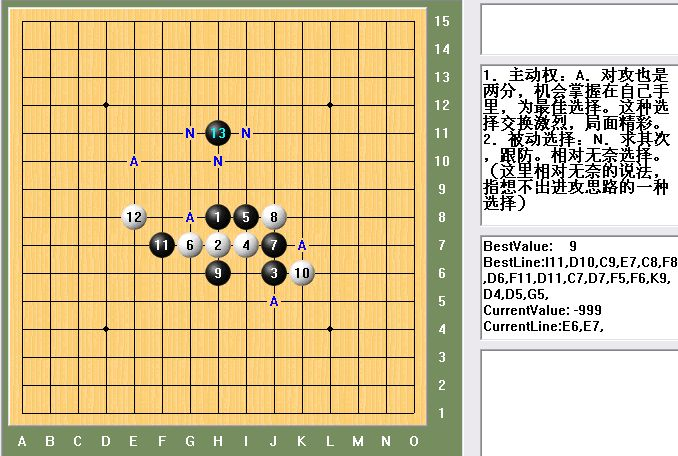

疏星一个骗13，怎么弄？
#1 疏星一个骗13，怎么弄？ 作者：wd1988 发表时间：2009-11-22 21:30:11
=======上图对应的爱五子棋谱代码如下，以便你拆解：========
h8h7j6i7i8g7j7j8h6k6f7e8h11
======================================================
感觉14哪里都不好，强攻绝对攻不下，防守吧，按道理这个局面是黑劣势的
［ 笑雨辰 于 2009-11-22 23:23:07 时花20金币送鲜花一朵］
#2 Re:疏星一个骗13，怎么弄？ 作者：兔子哥哥 发表时间：2009-11-23 0:17:12
按道理？呵呵说得好听，到底按什么道理这个局面黑不好，如果你能说出按什么道理黑不好下的话，你就会知道白14该走哪里最好了.如果你都不知道按什么道理，你怎么知道按道理这个局面是黑劣势的？呵呵按什么道理呢？#3 Re:疏星一个骗13，怎么弄？ 作者：wd1988 发表时间：2009-11-23 8:57:21
楼上别那么激动嘛，这个道理是下出这个黑13的人告诉我的（我执白），他是这么说的：“这个黑13是一个骗，骗得白强攻不下就能反杀，如果白棋防守正确，后盘黑棋会很不好下”
我杀不掉这个黑13，说明下这个黑13的人比我厉害，比我厉害的人说的话，我当然要听咯。如果他故意忽悠我，希望论坛老师们能够给我正确的指点
楼上你也太激动了，这又不是什么侮辱棋道的话，没必要这么冲动吧
#4 Re:疏星一个骗13，怎么弄？ 作者：岑小鱼 发表时间：2009-11-23 18:53:43
个人觉得2楼的像是反证思维 我也习惯这么思考
另外立5变化的时候也碰见过类似的做棋 当时没想出好办法于是贴身混战...
#5 Re:疏星一个骗13，怎么弄？ 作者：wd1988 发表时间：2009-11-23 19:29:37
我只是说语气不是很客气，当然我也没什么资格要求别人对我客气。只不过二楼并没有回答我的疑问，这个贴还是不能沉，顶起#6 Re:疏星一个骗13，怎么弄？ 作者：怪 发表时间：2009-11-23 19:37:36
瞄了一眼，立刻决定e10强攻。#7 Re:疏星一个骗13，怎么弄？ 作者：怪 发表时间：2009-11-23 19:42:24
又瞄了一眼，又决定g8强攻。#8 Re:疏星一个骗13，怎么弄？ 作者：怪 发表时间：2009-11-23 19:47:01
怎么感觉14哪里都好。。。
#9 Re:疏星一个骗13，怎么弄？ 作者：白河愁 发表时间：2009-11-23 22:57:54
#10 Re:疏星一个骗13，怎么弄？ 作者：屏蔽 发表时间：2009-11-24 15:55:53
假定这个局面真的是黑棋劣势，那我觉得防防也没啥不好。#11 Re:疏星一个骗13，怎么弄？ 作者：千羽鹤 发表时间：2009-11-27 19:51:49
防就是了嘛，黑又攻不出来，他说骗白强攻，如果防守正确黑不好下，什么叫正确的防守，杀不了的防守就基本正确了
#12 Re:疏星一个骗13，怎么弄？ 作者：我爱老婆一生 发表时间：2009-12-1 14:22:26
个人觉得J5比较强，攻守兼备。#13 Re:疏星一个骗13，怎么弄？ 作者：极地剑客 发表时间：2009-12-2 7:17:22
偶用39试试看~#14 Re:疏星一个骗13，怎么弄？ 作者：极地剑客 发表时间：2009-12-2 7:36:30
E9/E10#15 Re:疏星一个骗13，怎么弄？ 作者：二十七刀 发表时间：2009-12-2 8:04:36
地毯并不是只有完全必胜一种；另外就是平衡状态下，那黑白双方的交换完全分析整理完毕，每个点进攻和防守都详细地毯过，分不出胜败的也为地毯。因为对整个局面都做了地毯式研究，确实分不出胜败的，也为地毯。不过这种地毯这种方式，工程量太浩瀚了。
跟防也是一种等招。［ wd1988 于 2009-12-3 10:19:09 时花20金币送鲜花一朵］
#16 Re:疏星一个骗13，怎么弄？ 作者：wd1988 发表时间：2009-12-3 10:19:38
二十七刀兄的解说非常清楚！感谢！
#17 Re:疏星一个骗13，怎么弄？ 作者：小帮帮 发表时间：2009-12-16 16:39:48
白棋连一个活2也没有，13手假装后中先一下，吓唬吓唬对手，蛮好玩的啊
楼上分析基本正确，另外1上面，连接也不少，也应该作为一个点来考虑的